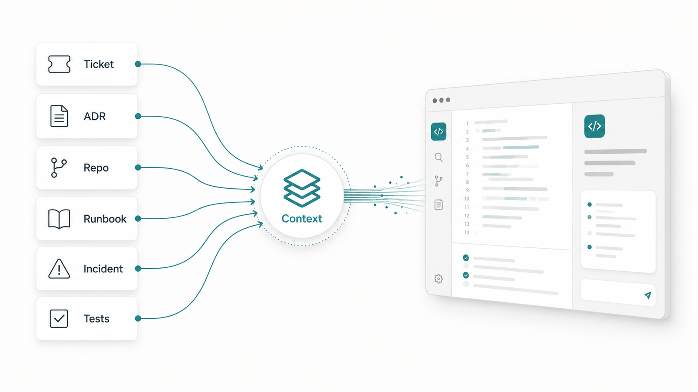
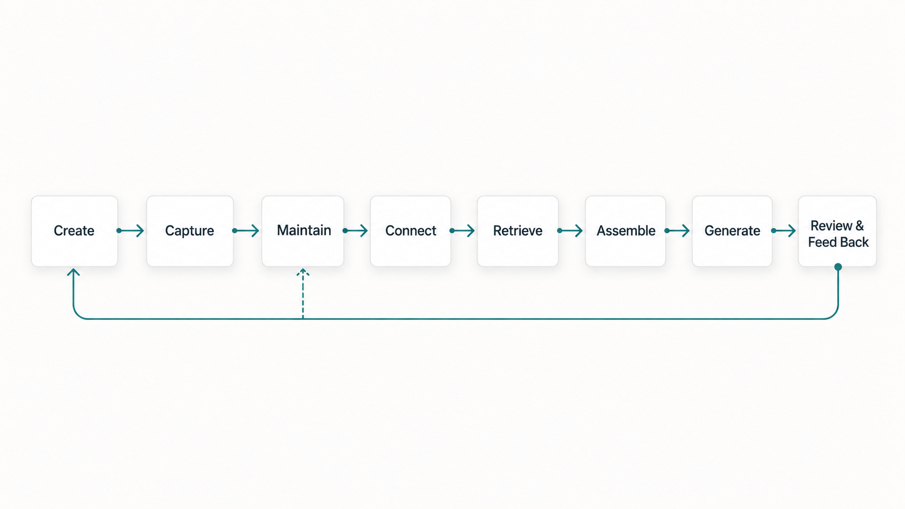
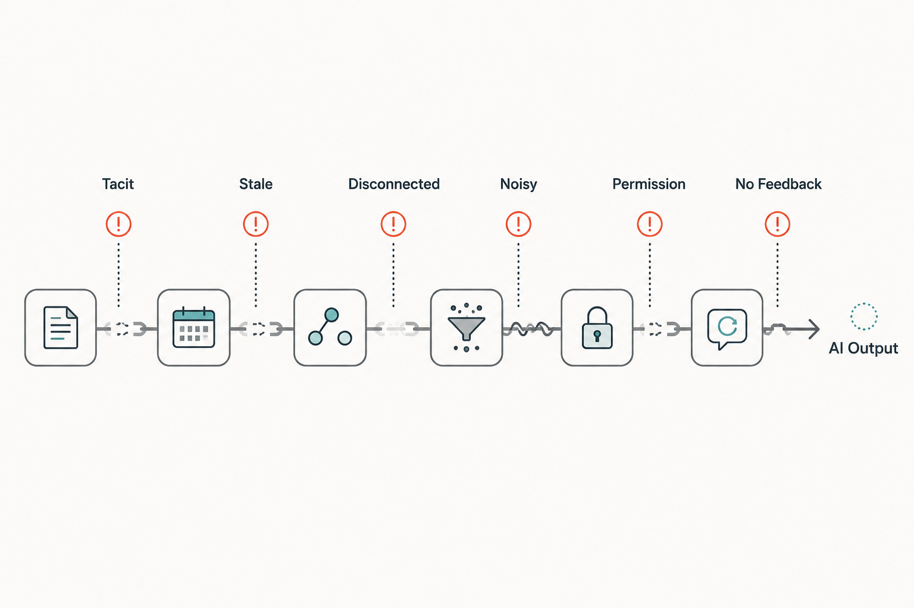

A developer asks an assistant to add a new endpoint. The assistant reads the nearby code, follows the local naming style, adds a handler, creates a few tests, and updates a small piece of documentation. The pull request looks reasonable.
Then review starts.
The endpoint uses an API pattern the platform team deprecated months ago. The new guidance exists, but it lives in a wiki page that is not linked from the repository. The ticket explains the happy path, but not the business rule that makes one customer segment different. A previous incident changed the retry expectation, but that lesson never made it into the service README or test examples. The security rule is known by reviewers, but not visible in the work item, PR template, or assistant instructions.
The organization had the knowledge.
The assistant did not receive it in a usable form.
It is tempting to call this a prompt problem. The prompt could probably have been better. But the deeper issue is upstream. The knowledge the assistant needed was created somewhere, captured somewhere else, maintained unevenly, disconnected from the workflow, and only partially available when the code was generated.
That is what I mean by the context supply chain.
Not a formal methodology. Not a new process framework. Just a practical way to describe how organizational knowledge becomes usable AI context.
Better AI-assisted engineering requires better knowledge flow, not just better prompts.
What the context supply chain means
In software teams, useful knowledge is spread across many places.
Business rules. Product decisions. Architecture documents. ADRs. Repository conventions. Work items. Acceptance criteria. API specs. Tests. Runbooks. Incident reviews. Deployment notes. Security standards. Code review comments. Operational dashboards.
DORA's work on AI-accessible internal data points to the same practical direction: AI tools become more useful when they can work with relevant internal context such as codebases, documentation, and operational information.
Some of this knowledge explains what the system does. Some explains why it changed. Some explains what should never be changed casually. Some explains how the team learned from a production issue. Some explains who owns a decision.
AI assistants do not automatically receive all of that.
They work from the context assembled for the task: the prompt, selected files, retrieved documents, repository instructions, terminal output, tool results, conversation history, and whatever other sources the workflow exposes.
The context supply chain is the path between organizational knowledge and that working context.
A useful version has eight stages:
- Knowledge is created.
- Knowledge is captured.
- Knowledge is maintained.
- Knowledge is connected to the workflow.
- Knowledge is retrieved with the right permissions.
- Knowledge is assembled into task context.
- The assistant generates output.
- Humans review the output and feed learning back into the system.

When that chain works, AI-assisted work becomes easier to review and more likely to fit the system.
When it breaks, the assistant fills gaps with assumptions.
Prompts are downstream
Prompts matter, but they are not the whole system.
A prompt is the final request. It is the point where a developer asks the assistant to do something.
But by the time the prompt is written, many important decisions have already happened.
Was the requirement captured clearly? Was the current architecture decision recorded? Was old guidance marked as superseded? Was the incident lesson turned into a test, runbook update, or coding rule? Was the security expectation close to the code? Was the assistant allowed to retrieve the right source? Did retrieval find current guidance or stale guidance?
Those questions shape the answer before the assistant starts generating.
This is why "prompt harder" has limits. A better prompt can clarify the immediate task. It cannot reliably compensate for a broken knowledge flow across the organization.
If a business rule lives only in a product manager's memory, the assistant cannot infer it safely. If an ADR is stale, retrieval may surface the wrong decision. If a runbook is accurate but disconnected from the service, the assistant may miss an operational constraint. If reviewers keep repeating the same standard but the standard is never encoded anywhere, the assistant will keep missing it too.
The prompt is downstream of all of that.
Where the chain breaks
Most context supply chain failures are ordinary.
They are not dramatic AI failures. They are familiar software engineering problems that become more visible when AI enters the workflow.
The first break is tacit knowledge. Every team has rules that "everyone knows." Use this service for customer lookup. Do not call that downstream API during checkout. Do not change this table without talking to operations. These rules may be obvious to experienced engineers and invisible to everyone else.
AI cannot read team memory.
The second break is stale knowledge. Old architecture documents, outdated API patterns, superseded ADRs, and forgotten wiki pages can be worse than no context. They create confidence around the wrong answer.
The third break is disconnected knowledge. The right information may exist, but not where the work happens. A ticket does not link the relevant ADR. A service README does not link the runbook. A PR template asks for testing, but not rollout risk. An incident review contains a lesson that never becomes a check, example, or instruction.
This is why documentation quality matters for AI-assisted work too. DORA describes documentation quality through attributes such as clarity, findability, and reliability. Those attributes are not only useful for humans. They also affect whether tools can retrieve and use the right guidance.
The fourth break is noisy knowledge. More context is not always better. If retrieval brings back five conflicting documents, long comment threads, old design notes, and unrelated logs, the assistant may have plenty of text and still lack the right signal.
The fifth break is permission. Some useful context is sensitive. Tickets may contain customer details. Incident reviews may include security information. Operational dashboards may expose production data. Connecting everything to an assistant is not a safe answer.
The sixth break is missing feedback. Review comments and incidents often reveal context gaps. If the team fixes only the current output and never updates the underlying knowledge source, the same failure returns.
That is how the context supply chain keeps leaking.

A practical model
A context supply chain does not need to be complicated.
Start with one workflow.
For example: adding a new API endpoint.
Ask what knowledge a developer would need to do the work safely:
- the ticket and acceptance criteria
- current API standard
- authentication and authorization rules
- service ownership
- relevant ADRs
- existing controller and test examples
- error handling convention
- deployment or rollout constraints
- incident lessons that changed the standard
- review expectations
Then map how that knowledge reaches the work.
Where is it created? Where is it captured? Who owns it? How does someone know it is current? Is it linked from the repository or ticket? Can the assistant retrieve it? Should the assistant retrieve it? Can a reviewer see which source was used? What happens when the guidance changes?
This mapping usually reveals simple improvements.
Move the current API standard closer to the repository. Link the relevant ADR from the service README. Add a PR template question for rollout risk. Turn a repeated review comment into a test, linter rule, or example. Mark old docs as superseded. Add ownership to the runbook. Include non-goals in the ticket. Update agent instructions with build commands, generated files, and local conventions.
This is not new engineering wisdom. The documentation chapter in Software Engineering at Google makes a similar point about ownership and maintenance: useful documentation should be treated as part of the engineering workflow, not as a side artifact. ADRs are another example. Martin Fowler describes an Architecture Decision Record as a short record of a decision, its context, and its consequences, and notes that changed decisions should be linked to superseding decisions.
None of these actions require a grand AI platform.
They improve the path from knowledge to work.
The chain should be reviewable
Good context flow does not remove review.
It makes review better.
If an assistant generates code using repository instructions, the reviewer should be able to inspect those instructions. If the change depends on an ADR, the PR should make that decision visible. If the ticket contains a non-goal, the implementation should not quietly expand beyond it. If the assistant used a runbook or platform standard, the reviewer should be able to understand that source.
This matters because AI output can look polished even when the context behind it is weak.
Reviewers should not only ask:
Is the code clean?
They should also ask:
What knowledge shaped this output? Was that knowledge current? Was anything important missing? Which assumptions did the assistant make? Do the tests prove the behavior that matters? Should a repeated correction become part of the context supply chain?
Every repeated review comment is a signal. Every incident caused by a missed standard is a signal. Every AI-generated change that looks plausible but misses local context is a signal.
Do not only fix the output.
Fix the path that produced it.
What better knowledge flow looks like
A healthier context supply chain has a few practical properties.
Important knowledge has a home. People know where the current API standard, architecture decision, runbook, or testing convention lives.
Important knowledge has an owner. Someone can update it, retire it, or mark it as superseded.
Freshness is visible. Old decisions point to newer decisions. Deprecated patterns point to replacements. Incident lessons become current guidance.
Context is close to the workflow. The right information appears in repositories, tickets, PR templates, CI feedback, review checklists, examples, and agent instructions.
Access is scoped. AI tools do not get everything by default. They receive what is needed for the workflow under appropriate permissions.
DORA's guidance on healthy data ecosystems is useful here because it pairs discoverability with governance. That balance matters for AI context too: useful knowledge should be reachable through clear paths, but not exposed without boundaries.
Output is reviewable. Humans can inspect the sources, assumptions, tests, and decisions that shaped the result.
Feedback loops exist. Review findings and incidents improve the knowledge system, not just the current pull request.
This is not about documenting everything.
It is about making important knowledge travel well.
Limits
The context supply chain is only a model.
It will not make AI output automatically correct. It will not remove the need for architecture judgment, product understanding, security review, testing, observability, or production ownership.
It can also be overdone.
If every small change requires a long context package, people will ignore the process. If assistant instructions become a dumping ground for every preference, they will become noisy. If teams connect sensitive systems without clear permissions, they create new risk. If stale documents are indexed without cleanup, retrieval may make bad guidance easier to find.
The goal is not maximum context.
The goal is reliable context flow for the work that matters.
Three practical takeaways
First, treat poor AI output as a possible context supply chain failure. Ask what knowledge was missing, stale, disconnected, noisy, or unavailable.
Second, improve one workflow at a time. Pick a real engineering workflow and map how knowledge reaches the ticket, repository, assistant, pull request, review, and release.
Third, close the loop. When review or production feedback reveals a missing standard, update the artifact, check, instruction, example, or owner that should carry that knowledge next time.
Better prompts are not enough
Better prompts help.
They can clarify the task, expose assumptions, and guide the assistant toward a better answer.
But prompts are only one point in the chain.
If the organization's knowledge is scattered, stale, unowned, permission-blocked, or disconnected from the workflow, the assistant will receive a broken view of the system.
The answer is not to connect everything blindly.
The answer is to make knowledge flow better.
Capture the decisions that matter. Keep the current guidance visible. Put context where work happens. Scope access. Review outputs. Feed lessons back into the system.
AI-assisted engineering improves when the context supply chain improves.
Not because the assistant becomes magically correct.
Because humans and AI are finally working from a clearer view of the system.